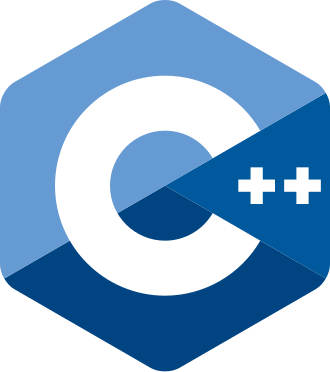
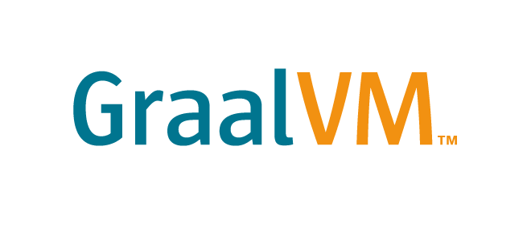
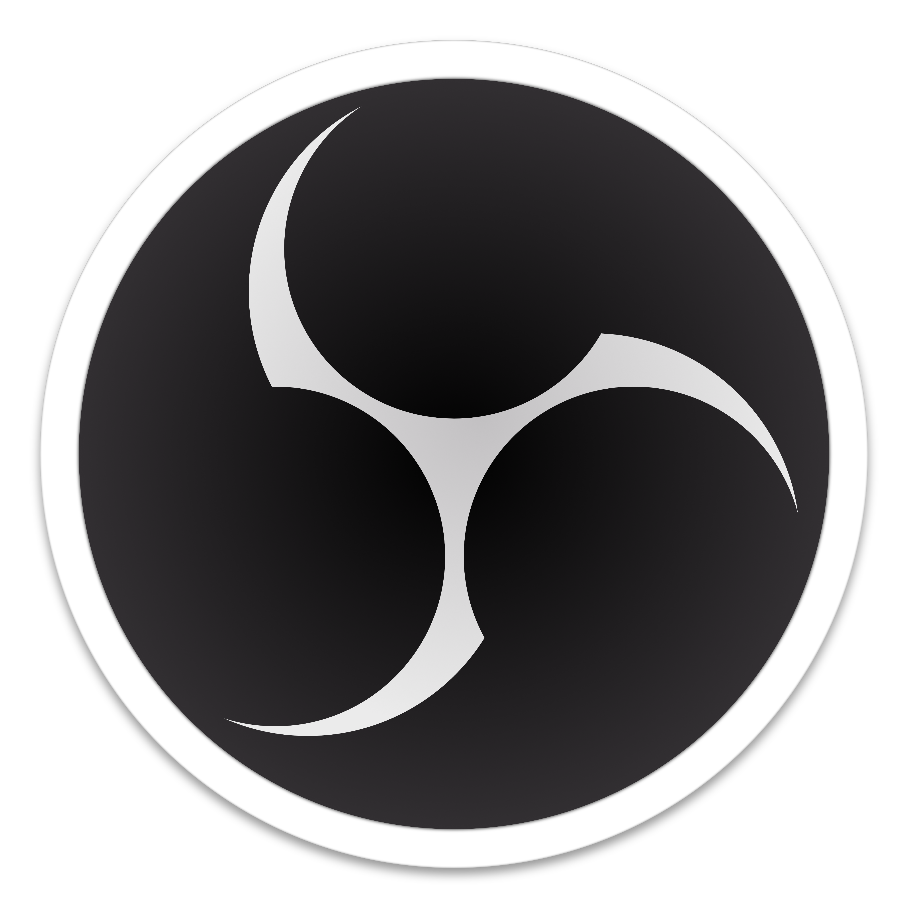
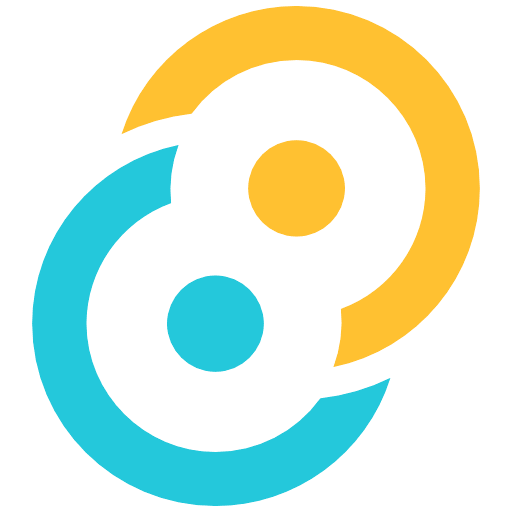

VOIDGLASS / TECH
La stack technique.
Les briques qui composent VoidGlass, du client desktop aux composants natifs.
LibGDX

GraalVM
ANGLE

libobs

 VOIDGLASS
VOIDGLASS
VOIDGLASS / TECH
Les briques qui composent VoidGlass, du client desktop aux composants natifs.



